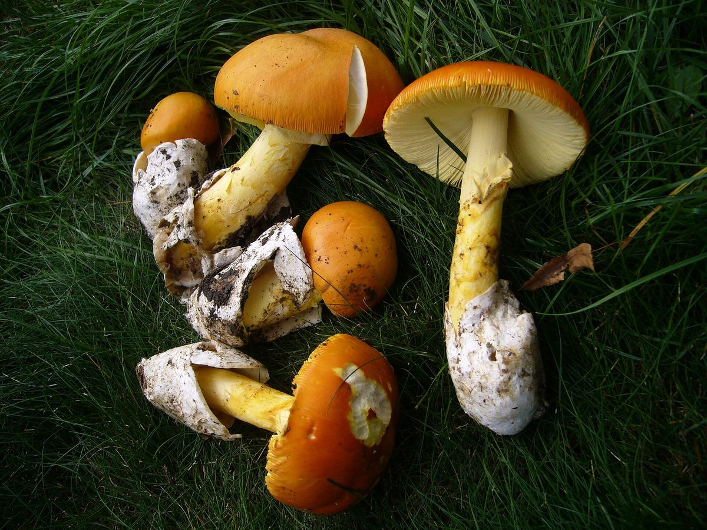
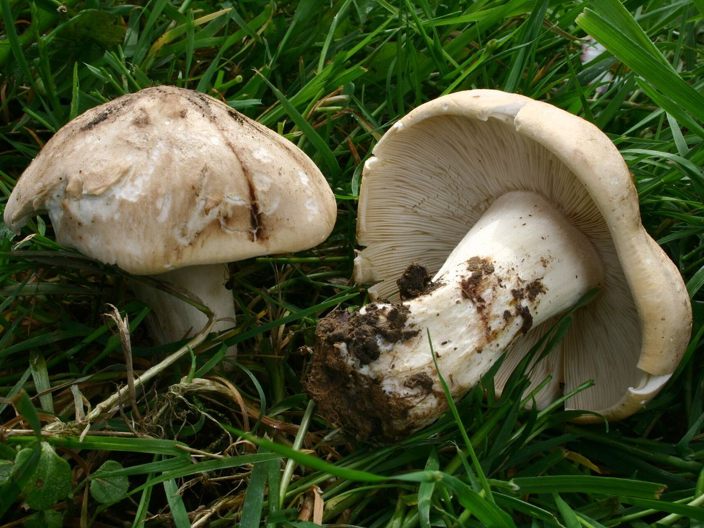
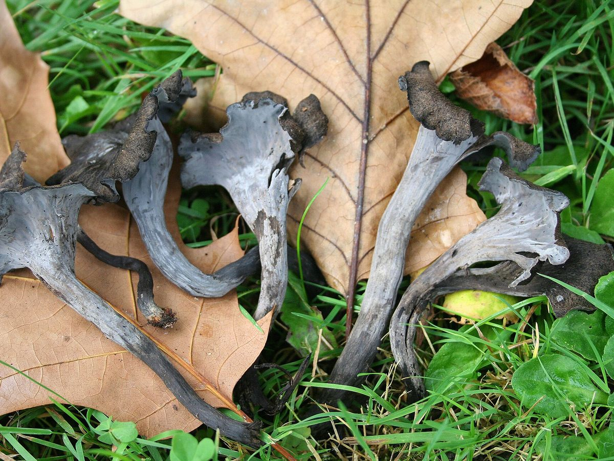
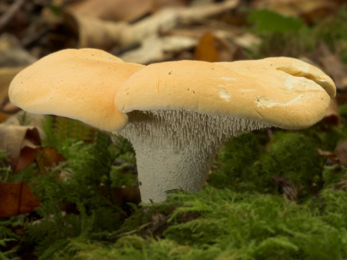
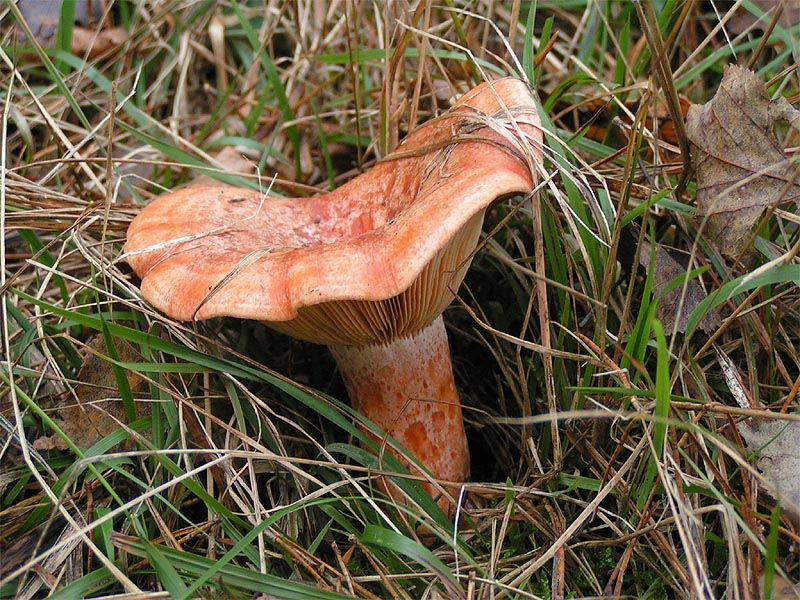
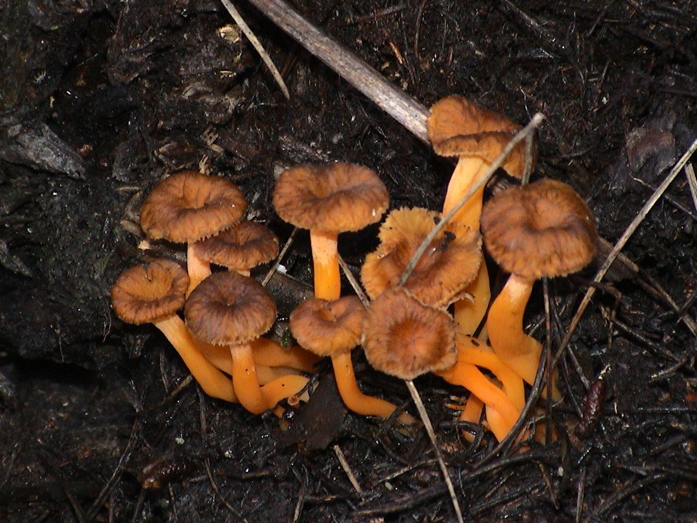
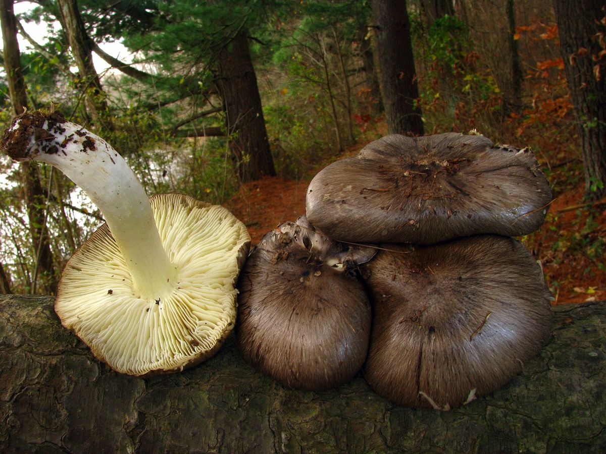

Boletus aereus / Boletus edulis
Ayı Mantarı
Porcini / Cep
Avrupa mutfağının “porcini”si. Fındıksı aroması ve etli yapısıyla taze, kurutulmuş ve dondurulmuş olarak en çok ihraç edilen doğa mantarlarından biri.
Ürünler
Türkiye’nin farklı ekolojik bölgelerinde, mevsiminde toplanan yenilebilir mantar türleri hakkında bilgi edinin.
Boletus aereus / Boletus edulis
Porcini / Cep
Avrupa mutfağının “porcini”si. Fındıksı aroması ve etli yapısıyla taze, kurutulmuş ve dondurulmuş olarak en çok ihraç edilen doğa mantarlarından biri.

Morchella conica / Morchella esculenta
Morel / Morille
Bal peteği görünümlü şapkasıyla dünyanın en değerli doğa mantarlarından. 2004’ten beri ürün yelpazemizde; taze, kurutulmuş ve dondurulmuş olarak sunulur.

Cantharellus cibarius
Chanterelle / Girolle
Yumurta sarısı rengi ve hafif kayısı kokusuyla tanınan, Avrupa pazarının en sevilen doğa mantarlarından biri.

Amanita caesarea
Caesar’s Mushroom
Turuncu-kırmızı şapkası ve altın sarısı lamelleriyle, Roma döneminden beri “mantarların kralı” sayılan değerli bir tür.

Calocybe gambosa
St. George’s Mushroom
İlkbaharda çayır ve mera kenarlarında halkalar halinde çıkan, taze un kokulu, etli beyaz bir mantar.

Craterellus cornucopioides
Black Trumpet
Koyu rengi ve derin, dumanlı aromasıyla gurme mutfakların aradığı bir tür.

Hydnum repandum
Hedgehog Mushroom
Şapkasının altındaki diken benzeri çıkıntılarıyla kolay tanınan, sıkı etli ve hafif tatlı bir orman mantarı.

Lactarius deliciosus
Saffron Milk Cap / Níscalo
Turuncu şapkası ve kesildiğinde akan turuncu sütüyle tanınan, çam ormanlarının en sevilen sonbahar mantarlarından biri.

Craterellus lutescens
Yellow Foot Chanterelle
Kahverengi huni biçimli şapkası ve parlak turuncu-sarı sapıyla, sarıkızın ince ve aromatik akrabası.

Tuber aestivum / Tuber borchii
Summer Truffle / Bianchetto
Toprak altında yetişen, yoğun aromasıyla gurme mutfakların en değerli malzemelerinden biri.

Tricholoma portentosum
Charbonnier / Sooty Head
Morumsu gri şapkası ve sarımsı lamelleriyle, çam ormanlarında geç sonbaharda çıkan etli bir tür.
Bu sunum şeklinde ürün bulunmuyor.
Sezon Takvimi
Sezonlar yağış ve sıcaklığa bağlı olarak yıldan yıla birkaç hafta değişebilir.
| Ürün | Oca | Şub | Mar | Nis | May | Haz | Tem | Ağu | Eyl | Eki | Kas | Ara |
|---|---|---|---|---|---|---|---|---|---|---|---|---|
| Ayı MantarıBoletus aereus / Boletus edulis | Sezon | Sezon | Sezon | Sezon | Sezon | |||||||
| Kuzugöbeği MantarıMorchella conica / Morchella esculenta | Sezon | Sezon | Sezon | |||||||||
| Sarıkız MantarıCantharellus cibarius | Sezon | Sezon | Sezon | Sezon | Sezon | Sezon | ||||||
| Yumurta MantarıAmanita caesarea | Sezon | Sezon | Sezon | Sezon | ||||||||
| Cincile MantarıCalocybe gambosa | Sezon | Sezon | Sezon | |||||||||
| Borazan MantarıCraterellus cornucopioides | Sezon | Sezon | Sezon | Sezon | ||||||||
| Sığırdili MantarıHydnum repandum | Sezon | Sezon | Sezon | Sezon | ||||||||
| Kanlıca MantarıLactarius deliciosus | Sezon | Sezon | Sezon | |||||||||
| Civciv Ayağı MantarıCraterellus lutescens | Sezon | Sezon | Sezon | |||||||||
| Trüf MantarıTuber aestivum / Tuber borchii | Sezon | Sezon | Sezon | Sezon | Sezon | Sezon | Sezon | Sezon | Sezon | |||
| Mor Cincile MantarıTricholoma portentosum | Sezon | Sezon | Sezon |
Sunum Şekilleri
Toplandığı gün sınıflandırılır, soğuk zincirle en kısa sürede sevk edilir.
Bütün veya dilim halinde, kontrollü ortamda kurutulur; böylece raf ömrü uzar.
Bütün, dilim veya küp halinde hızla dondurulur; sezon dışında da tedarik edilebilir.
Ürünler I., II. ve III. kalite ile 0–3, 3–6 ve 6+ cm boy gruplarına ayrılır.
Ürün fotoğrafları Wikimedia Commons’tan, belirtilen lisanslarla kullanılmıştır.